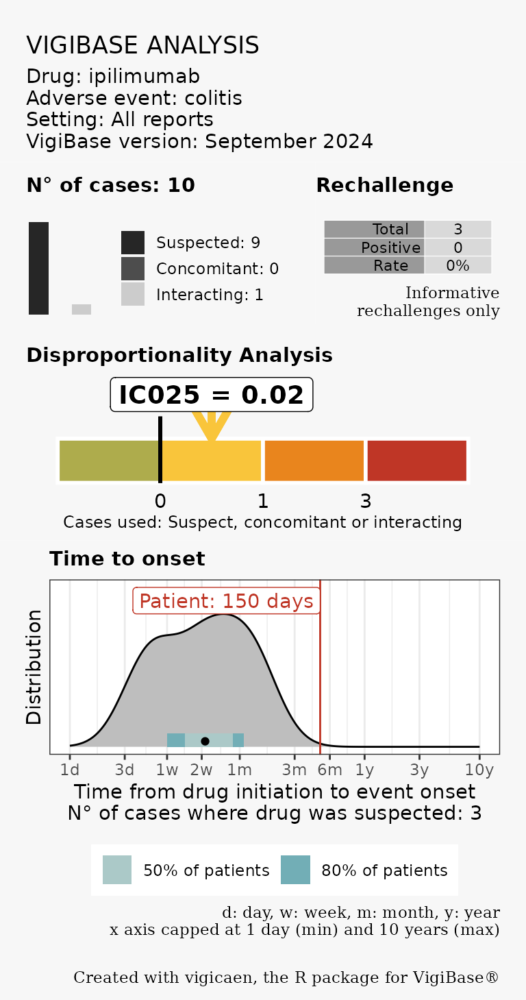

Routine pharmacovigilance
Source:vignettes/routine_pharmacovigilance.Rmd
routine_pharmacovigilance.RmdMotivation
The aim of this vignette is to describe how to use vigicaen in the context of routine pharmacovigilance.
In a hurry? Check the condensed script of this vignette at
vignette("template_routine").
The standard user of this vignette is:
- A pharmacovigilance practitioner
- Interested in R, but not necessarily willing to become an R expert, nor a data management expert.
- Working on a pharmacovigilance case, and seeking for additional data, to improve his/her case report: Disproportionality Estimates, possibly refined to a certain context, and time from drug initiation to reaction onset.
Meeting these criteria? Then this vignette is for you!
The whole game
The idea is to reduce to the minimum steps to get data from VigiBase.
Load VigiBase data into R
Identify the drug and reaction of interest
Run
vigi_routine()Save the results, in order to insert them into your pharmacovigilance report.
vigi_routine() is intended as the cornerstone function
in this workflow.
We will use the following example: Say a physician reported a case of colitis with nivolumab. We would like to know if there is a reporting association between colitis and nivolumab, and we would like to analyze time to onset.
Obviously, the first part is more interesting if the association between colitis and nivolumab is not well established.
Load tables
If you haven’t already, you should build tables in an R compatible
format, using the tb_vigibase() and tb_who()
functions. More information can be found in
vignette("getting_started").
This rather long step must only be done once per database version.
Then, you need to set up the paths to your tables, and use
dt_parquet().
path_base <- "~/vigibase/main/"
path_who <- "~/vigibase/who/"
path_meddra <- "~/meddra/"Load tables into R. Preferably, let them out of memory, especially if you have a computer with rather low specifications (e.g., 16GB of RAM).
demo <- dt_parquet(path_base, "demo", in_memory = FALSE)
drug <- dt_parquet(path_base, "drug", in_memory = FALSE)
adr <- dt_parquet(path_base, "adr", in_memory = FALSE)
link <- dt_parquet(path_base, "link", in_memory = FALSE)
mp <- dt_parquet(path_who, "mp")
meddra <- dt_parquet(path_meddra, "meddra")For this vignette, we will use built-in example tables instead.
demo <- demo_
adr <- adr_
drug <- drug_
link <- link_
mp <- mp_
meddra <- meddra_Identify drug and reaction of interest
Select the drug and reaction
First, create named lists of the drug and reaction of interest. This
is exactly similar to the vignette("basic_workflow").
d_sel <- list(
nivolumab = "nivolumab"
)
a_sel <- list(
# this is a High Level Term
colitis = "Colitis (excl infective)"
)When working with vigicaen, we always need to tell R which drug and
which reaction we are interested in. Here, we create the
d_sel object, which is a list, with one item. The item name
is nivolumab, and the content of this item is “nivolumab”. The same goes
for a_sel.
Use lower case for drugs: Good : “nivolumab”, Wrong : “Nivolumab”, “NIVOLUMAB”
Mind the capital letter at the beginning of reactions (“Colitis”): It must match exactly to the MedDRA term of this reaction.
The d_sel must contains an “active ingredient”, which is
the same as the international non-proprietary name, in a majority of
cases.
The a_sel must contain a MedDRA term, that can be either
an Preferred Term, or any other Term level in MedDRA. It could also be
an SMQ.
In order to use
vigi_routine(), bothd_selanda_selmust contain one, and only one, item each.
Collect IDs of drug and reaction
The get_* functions family let you convert these terms
into IDs, that can be used in VigiBase tables.
For drugs, we need to get DrecNos (Drug Record Numbers). For reactions, we need low-level term codes.
In this example, we will use get_drecno() and
get_llt_soc().
Feel free to browse the other get_* functions:
get_llt_smq(), get_atc_code().
d_code <-
get_drecno(d_sel, mp = mp)
#>
#> ── get_drecno() ────────────────────────────────────────────────────────────────
#>
#> ── `d_sel`: Matching drugs ──
#>
#> ── ✔ Matched drugs
#>
#> → `nivolumab`: "nivolumab" and "ipilimumab;nivolumab"
#>
#>
#> ℹ Set `verbose` to FALSE to suppress this section.
#>
#>
#>
#> ────────────────────────────────────────────────────────────────────────────────
a_code <-
get_llt_soc(a_sel, term_level = "hlt", meddra = meddra)
#>
#> ── get_llt_soc() ───────────────────────────────────────────────────────────────
#>
#> ── ✔ Matched reactions at `hlt` level (number of codes) ──
#>
#> → `colitis`: "Colitis (excl infective) (39)"
#> ℹ Set `verbose` to FALSE to suppress this section.Use vigi_routine()
You’re almost done, the last thing you need to do is run
vigi_routine().
It takes several arguments:
demo_data,drug_data,adr_data,link_data: The tables you loaded earlier (as demo, drug, adr, and link)d_code,a_code: The IDs of the drug and reaction of interestvigibase_version: It’s a character string that will be printed in the graph legend. You can use anything, such as “September 2024”. Just remember to write something.
vigi_routine(
demo_data = demo,
drug_data = drug,
adr_data = adr,
link_data = link,
d_code = d_code,
a_code = a_code,
vigibase_version = "September 2024"
)
Lets take a look at the results. There are 2 graphs, one of top of the other.
The first graph is a disproportionality analysis, using the Information Component. The color scale is purely indicative and should not be considered as standard.
The second graph is a time to onset analysis. It shows the distribution of time to onset from drug initiation (here, nivolumab), to reaction onset (colitis). The scale is log-transformed, and span from 1 day to … 10 years! The pale blue and sustained blue bars at the bottom indicate the number of limits where 50% and 80% of the patients fall. We can roughly see that 50% of the patients had a time to onset comprised between ~1.5 month and 1 year. This second graph uses only cases where the drug was suspected to be responsible for the reaction.
Add your own case time to onset
As we said earlier, we are working on a case reported by a physician. In this case, the colitis happened 150days after nivolumab initiation.
We can add this information to the graph, using the
case_tto argument.
vigi_routine(
case_tto = 150,
demo_data = demo,
drug_data = drug,
adr_data = adr,
link_data = link,
d_code = d_code,
a_code = a_code,
vigibase_version = "September 2024"
)
Customize the graph
There are a few options to customize the output of this graph.
You can use the d_label and a_label
arguments to change the display in the legend.
Exporting your results
You can save the results of vigi_routine() in a separate
file, using the export_to argument.
export_to must be a character string, indicating the
path on your computer where you want to file to be saved. It
must end with one of the following extensions:
“.eps”, “.ps”, “.tex” (pictex), “.pdf”, “.jpeg”, “.tiff”, “.png”, “.bmp”, “.svg” or “.wmf” (windows only)
Some of these extensions (like .svg) require additional packages to work. (e.g. svglite for “.svg”).
vigi_routine(
case_tto = 150,
demo_data = demo,
drug_data = drug,
adr_data = adr,
link_data = link,
d_code = d_code,
a_code = a_code,
d_label = "Nivolumab",
a_label = "Colitis (HLT)",
vigibase_version = "September 2024",
export_to = "~/vigicaen_graph.png"
)